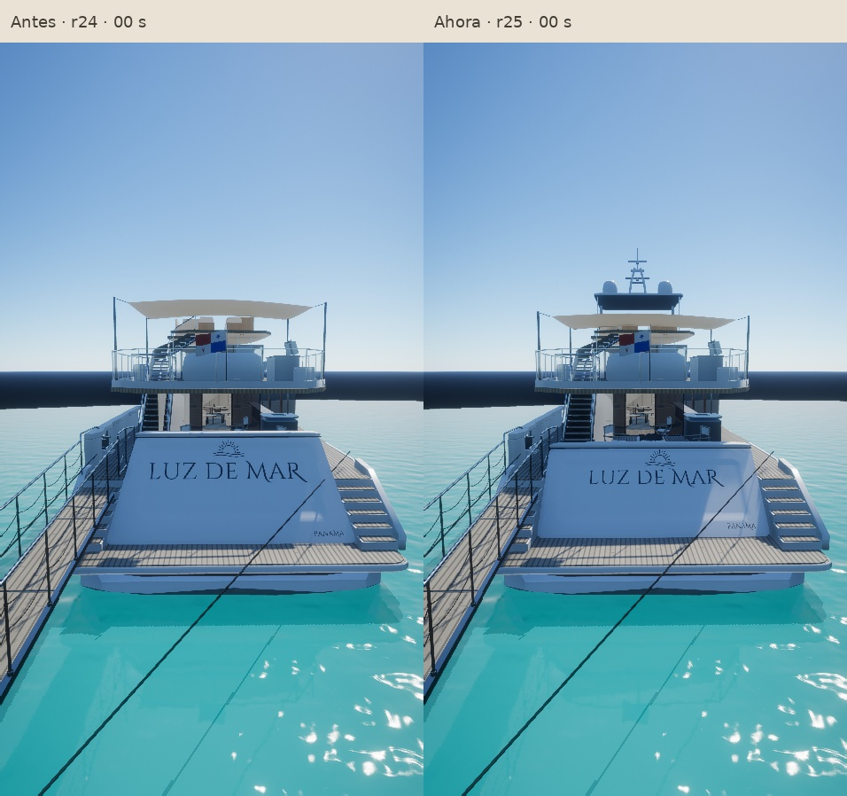
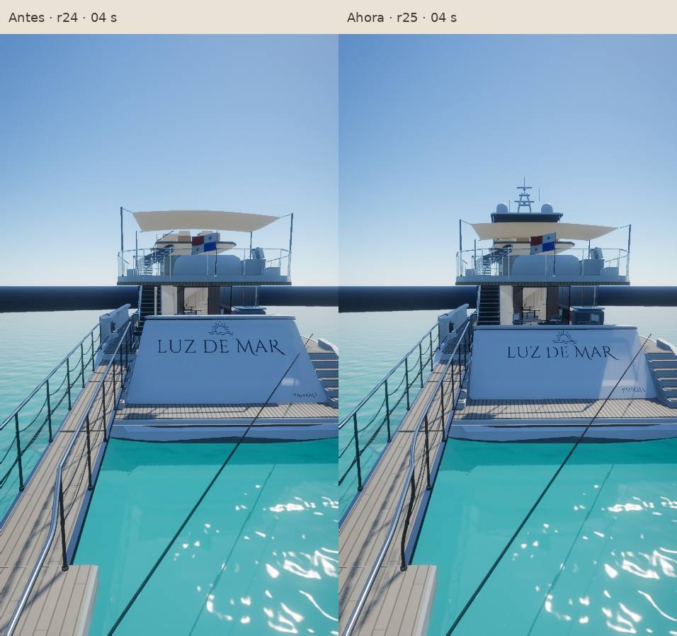
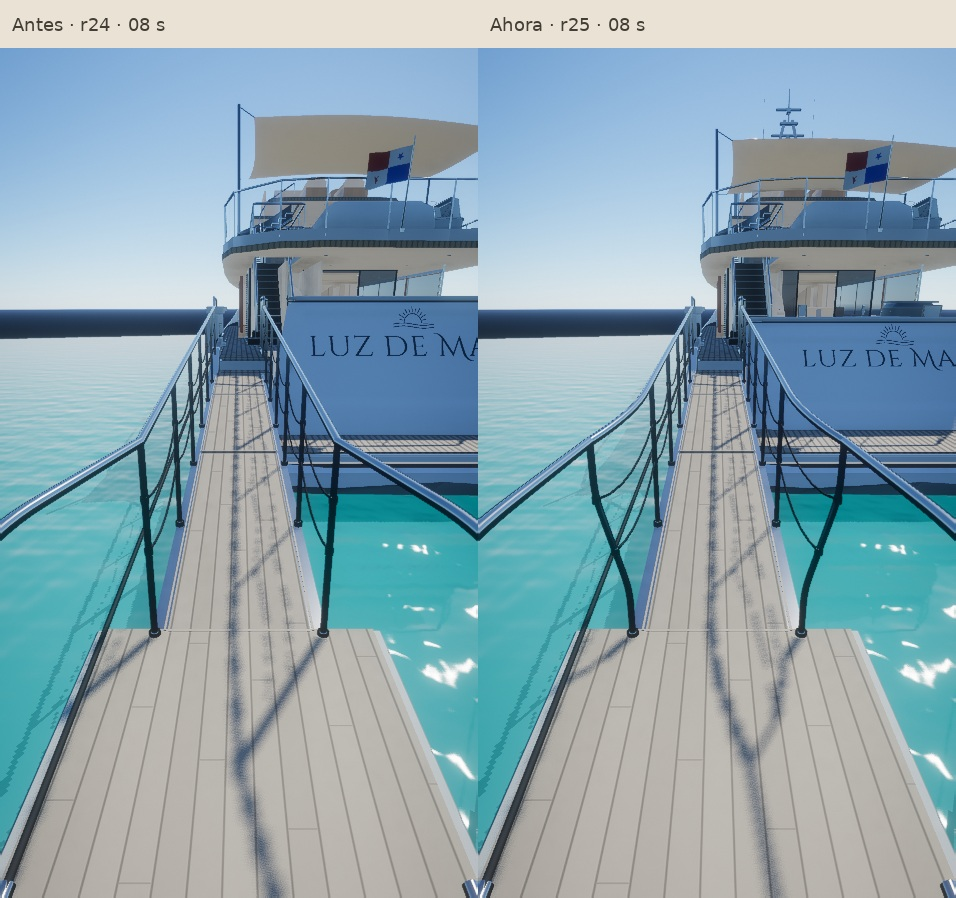
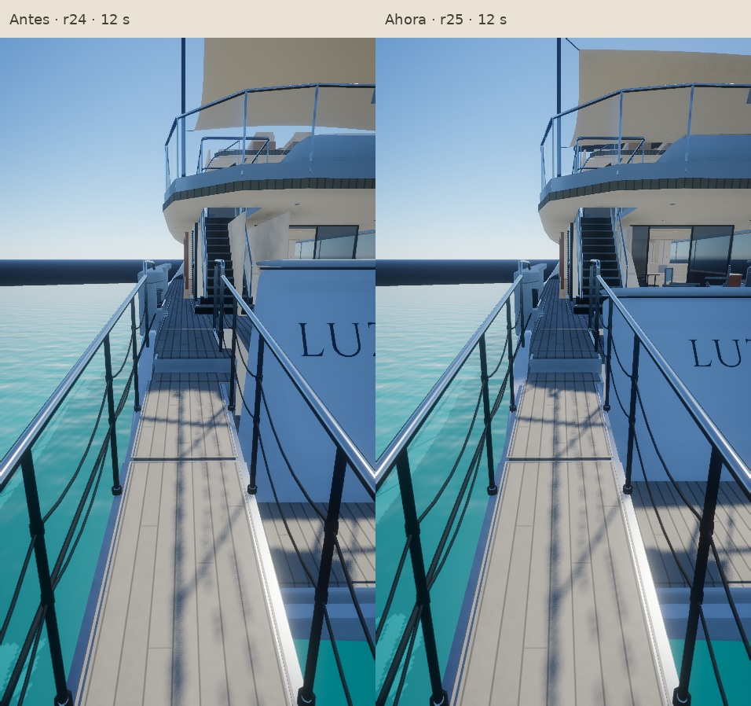
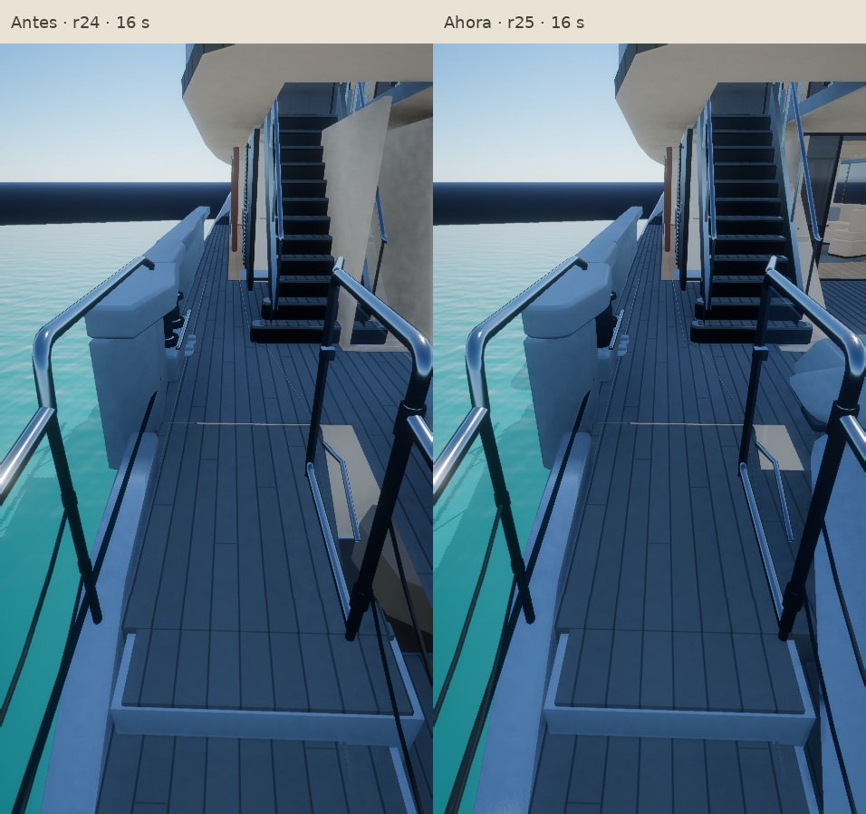
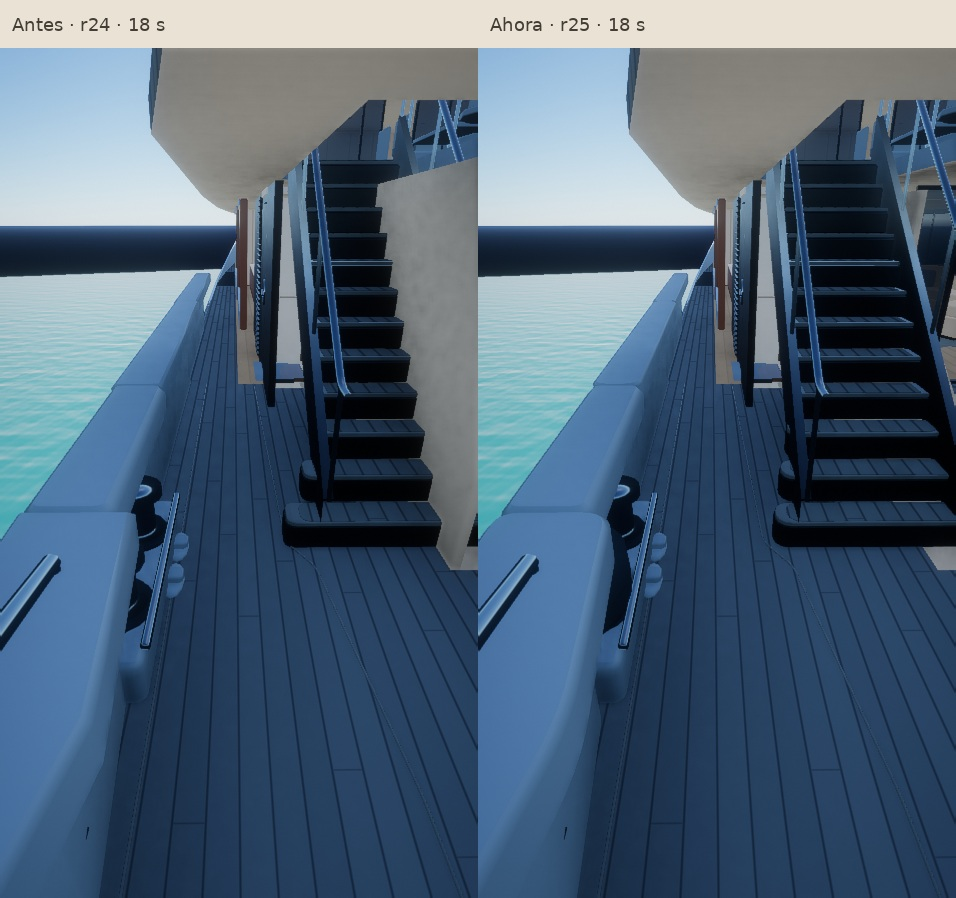
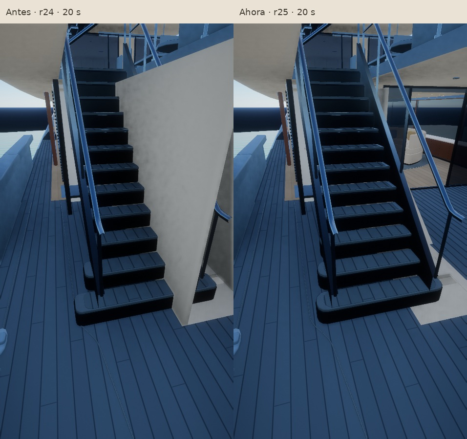

Luz de Mar · Rocha · r25
De la pasarela a bordo.
Popa ajustada, pasamanos curvos, bordes suavizados y acceso libre junto a la escalera. El cerramiento de servicio sigue ahora el perfil inclinado. El mástil y los domos blancos completan la silueta superior.
Ver el video antes y después
Capturas controladas del modelo con sus materiales, sombras y antialiasing. Las dos versiones repiten las mismas 600 posiciones de cámara. El video a 30 fps se genera fuera de tiempo real; no mide el rendimiento de un teléfono. El paisaje de esta captura está simplificado.
Siete puntos del recorrido

00 s · Panel, nombre, emblema y equipo superior
04 s · Forma de popa y silueta
08 s · Apertura de pasamanos y secciones de pasarela
12 s · Encuentro de pasarela, puerta y rellano
16 s · Acceso libre junto a la escalera
18 s · Borda, amarre y tres primeros peldaños
20 s · Lateral negro, cerramiento y continuidad de la escaleraCoste gráfico
| Recurso del yate | Antes | Ahora |
|---|
| Triángulos | 183,650 | 188,129 |
| Memoria de geometría | 8.62 MB | 8.80 MB |
| Lotes del yate + pasarela | 13 + 2 | 13 + 2 |
| Texturas o pasadas nuevas | — | 0 |
Pruebas de navegación aprobadas con teclado y tacto, incluidas las dos puertas de servicio y las cinco escaleras.